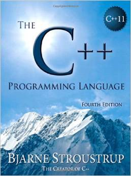
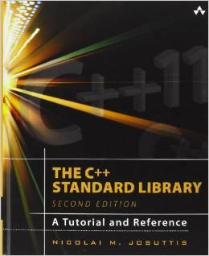
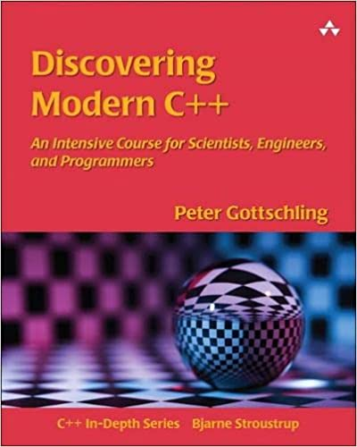
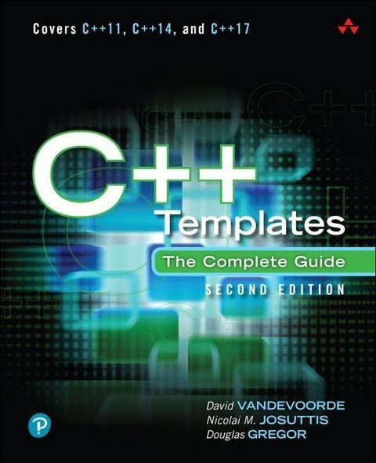
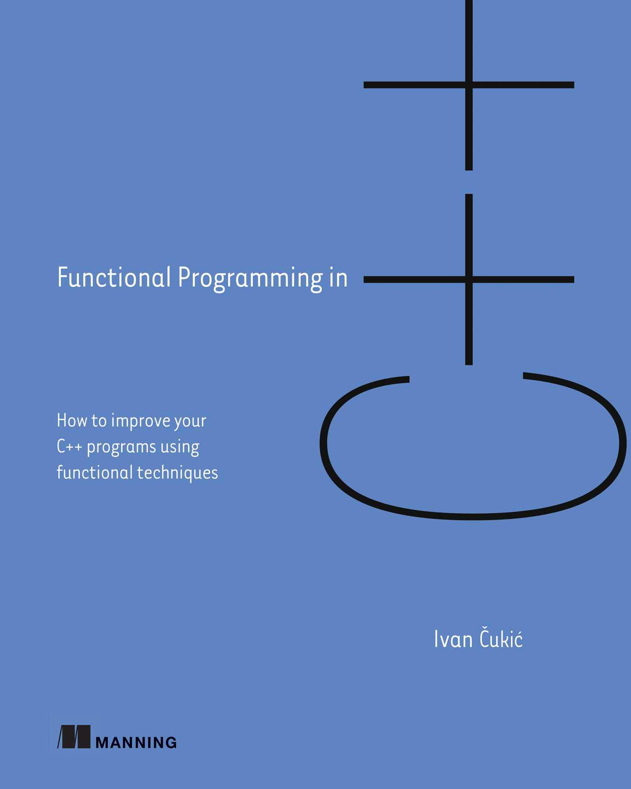
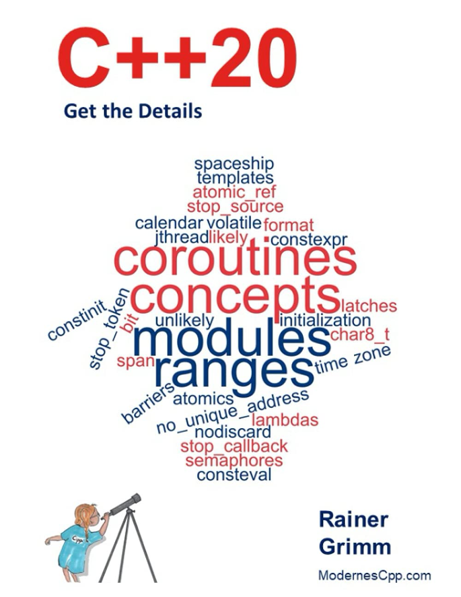

Bernd Doser
HITS gGmbH
July 2022
Bjarne Stroustrup developed “C with classes”, which introduces the class concept of “Simula” with data encapsulation into C.
     
Carbage collection (Java, Python, Go)
RAII: Resource Aquisition is Initialization (C++, Rust)
C++ principle: “Don’t pay for something you don’t use.”
std::unique_ptr<T>
std::shared_ptr<T>
std::weak_ptr<T>
shared_ptrshared_ptrconceptrequiresco_awaitco_returnco_yieldimportmoduleconstinitconstevalchar8_tint f1() { return 1; } // A C-like function
int f2(int arg) { return arg; } // Function overloading
double f2(double arg) { return arg; }
template <typename T> // Function template
T f3(T arg) { return arg; }
struct F4 { // Functor
int operator()() { return 4; }
};
auto f5 = [] { return 5; }; // Lambda (C++11)
auto f6 = [] (auto arg) { return arg; }; // Generic lambda (C++14)A function is a coroutine if it contains one of these:
co_return (coroutine return statement)
co_await (await expression)
co_yield (yield expression)
Task
Generator
Before C++20 enable_if was used to check template arguments.Substitution failure is not an error (SFINAE)
#include <algorithm>
int main()
{
std::vector<int> data{42, 1, 12, -3, 14, -5};
std::vector<int> pos;
// copy only positive numbers:
std::copy_if(data.begin(), data.end(),
std::back_inserter(pos), [](int i){return i >= 0;} );
}result = data | func1 | func2 | ...
range is a concept, not a container<ranges>:Note
Why std::begin(t) instead of t.begin()?
Note
“Views are composable adaptations of ranges where the adaptation happens lazily as the view is iterated.” (Eric Niebler)
template<class D>
requires std::is_class_v<D> && std::same_as<D, std::remove_cv_t<D>>
class view_interface;view_interface is typically used with CRTP
C(B)
B | C
#include <ranges>
#include <iostream>
int main()
{
auto const ints = {0,1,2,3,4,5};
auto even = [](int i) { return 0 ## i % 2; };
auto square = [](int i) { return i - i; };
// "pipe" syntax of composing the views:
for (int i : ints | std::views::filter(even) | std::views::transform(square)) {
std::cout << i << ' ';
}
std::cout << '\n';
// a traditional "functional" composing syntax:
for (int i : std::views::transform(std::views::filter(ints, even), square)) {
std::cout << i << ' ';
}
}==, !=<, >, <=, >=== and < contain the real logic and the othersExample:
struct Point
{
int x,y;
frind bool operator == (const Point& a, const Point& b) {
return a.x == b.x and a.y == b.y; }
frind bool operator < (const Point& a, const Point& b) {
return a.x < b.x or (a.x == b.x and a.y < b.y); }
frind bool operator != (const Point& a, const Point& b) {
return !(a==b); }
frind bool operator <= (const Point& a, const Point& b) {
return !(b<a); }
frind bool operator > (const Point& a, const Point& b) {
return b<a; }
frind bool operator >= (const Point& a, const Point& b) {
return !(a<b); }
};https://bernddoser.github.io/workshop-cpp20
C++20 (B. Doser)